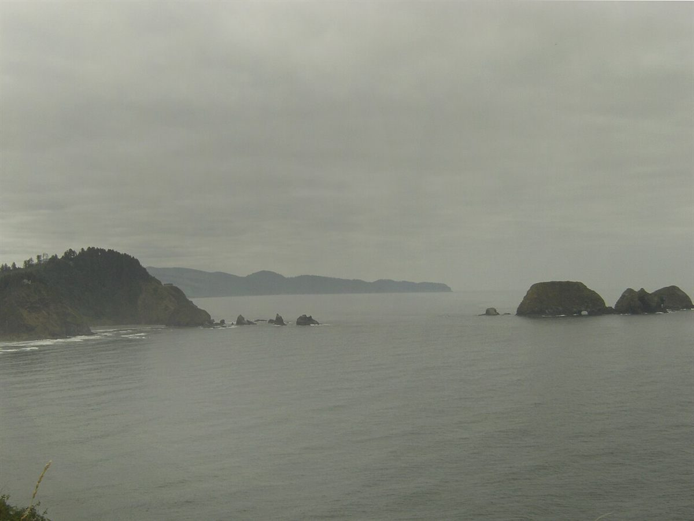

制作側の連想
「SUUS」の音から考えたこと
店名の由来は分かりません。制作側は「SUUS」を「スゥ」と読み、「吸う」を連想しました。ひとくち目の前に、すっと息を吸う。そこでこのページは、息を吸って吐くひと呼吸の形で組んであります。ブロックの幅が少しずつ広がり、いちばん広いところを過ぎて、また狭まっていきます。これは制作側の連想で、お店の理念・由来とは無関係です。
事実として確認できるのは、4文字の綴り S-U-U-S が、前から読んでも後ろから読んでも同じ並びだということだけです。
ひと呼吸ぶんの写真(イメージ)
すう、そして、はく。
写真は富士市やお店のものではありません。呼吸の段階のイメージで選んだ、国外・撮影地不明のフリー素材です。
吸いはじめ
国外のイメージ(スウェーデン)
吸う
撮影地不明のイメージ
いっぱいに
撮影地不明のイメージ
吐く
国外のイメージ(ドイツ)
吐ききる国外のイメージ(米国)

ご案内
お店のこと(確認できたものだけ)
| 所在地 | 〒417-0047 静岡県富士市青島町183 |
|---|---|
| 電話 | なし |
| 営業時間 | 準備中 |
| 定休日 | 準備中 |
| ご予約 | 準備中 |
| 駐車場 | 準備中 |
| SNS | Instagram @suus_coffee |